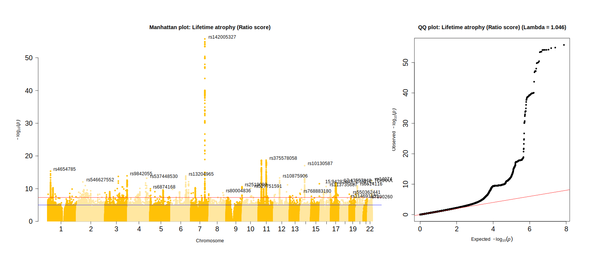
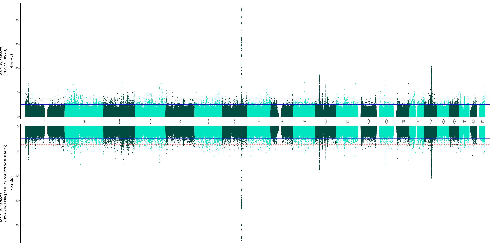

As unintuitive as it may seem, you must standardise the age variable before running this script. Regenie calculates a product-wise variable for the interaction between phenotype and age and if age is indicated in months or even days, the variable will be so large that regenie cannot handle it, and results will be massively inflated (results are complete nonsense with every SNP being extremely significant).
Code
#!/bin/bash# note that this script only runs when linked to the bgen sample file trait=$1for CHR in{1..22}doregenie_v3.4\--step 2 \--bgen $imputed/ukb_chr${CHR}_clean_v3.bgen \--ref-first \--sample $sampleFile/ukb10279_imp_chr${CHR}_v3_s487395.sample \--keep $genotype/ukb_neuroimaging_brainAtrophy_GWASinput.fam \--covarFile $phenotype/UKB_covarGWAS.txt \--catCovarList sex,assessmentMonth,site,array,batch \--maxCatLevels 106 \--phenoFile $phenotype/UKB_CrossNeuroIDP_noOutliers.txt \--phenoColList ${trait}\--bsize 400 \--minINFO 0.4 \--minMAC 5 \--threads 5 \--gz \--interaction age \--pred ${step1}/Step1_out_all_noOutliers_pred.list \--out $wd/GWAS_${trait}_chr${CHR}_interactiondone
Format GWAS data
Code
library(data.table)library(stringr)# Read in the files for each area and merge them all_traits<-c("resid_stand","ratio_stand","diff_stand","TBVstand","ICVstand","CSFstand")for(i in all_traits){# list all files that belong to this trait fileNames =list.files(pattern = i) fileNames = fileNames[grepl(".regenie.gz", fileNames)]# exclude the 'interaction' GWAS fileNames = fileNames[!grepl("_interaction_", fileNames)]# include the 'interaction' GWAS#fileNames = fileNames[grepl("_interaction_", fileNames)]# sex split analyses#fileNames<-fileNames[grepl("_males", fileNames)]#i = paste0(i,"_males")# count number of chromosomesif(length(fileNames) !=22){warning(paste0(i, " GWAS has not got exactly 22 chromosome files!"))}# set object to count number of rows to 0 count_rows<-0# object to hold GWAS dat <-data.frame() for(j in fileNames){print(j)# read in file file<-fread(j,header=T,data.table=F)# if this is an interaction test, only keep interaction row for each SNPif(grepl("interaction", j)){# pull out the interaction effect from the full model file <- file[grepl("SNPxage", file$TEST),] # if we're interested to look at attenuation of SNP effects, we can pull out ADD_INT_SNP which should represent the main effect of the tested SNP in the interaction model#file <- file[grepl("INT_SNP", file$TEST),] # remove SNPxage#file <- file[!grepl("SNPxage", file$TEST),] }# merge dat <-rbind(dat, file) # count number of rows count_rows<-count_rows+nrow(file) }print("Done merging chromosome files")## Sanity checks: Does the resulting file have the expected dimensions?if(nrow(dat)!= count_rows){print("Resulting merged file does not match the expected numeber of rows");break}if(ncol(dat) !=14){print("Resulting merged files does not match the expected number of columns"); break}print("File has dimensions as expected")print(dim(dat))# transform pvalues from log transformation to regular# https://www.biostars.org/p/358046/ dat$P<-10^(-dat$LOG10P)#if(min(dat$P,na.rm=T)<=0 | max(dat$P,na.rm=T) >= 1){"Transformed p-value is out of bounds"; break}summary(dat$P)print("Done transform p-value column, and p-values are between 0 and 1")# create MAF column dat$MAF<-ifelse(dat$A1FREQ <0.5, dat$A1FREQ, 1-dat$A1FREQ)# remove EXTRA column because it's empty dat$EXTRA <-NULLprint(paste0("This is the file head for ",i))print(head(dat))# define file name to save the merged file fileName <-paste0("/CCACE_Shared/Anna_F/BrainAtrophy/data/regenie_out/finalGWAS/GWAS_brainAtrophy_", i,"_N43110.gz")# if this is an interaction run, name accordingly} if(grepl("interaction", j)){#fileName <- paste0(wd,"/GWAS_brainAtrophy_", i,"_attenuatedMainEffects_N43110.gz") fileName <-paste0(wd,"/GWAS_brainAtrophy_", i,"_SNPxage_N43110.gz") }# save merged filefwrite(dat, fileName, na ="NA", quote = F, sep ="\t", row.names =FALSE, col.names =TRUE)print(paste0("Done writing file for ", i))}print("Done all traits")
Manhattan plot
The scripts below were used to make Figure 4 in the main paper, and Supplementary Plots 15-19.
Alter Manhattan function for better looking annotation
This function was saved in a file called manhattan_big.R to be read in with source(manhattan_big.R) in the next step.
Code
manhattan_big <-function(x, chr="CHR", bp="BP", p="P", snp="SNP", col=c("gray10", "gray60"), chrlabs=NULL,suggestiveline=-log10(1e-5), genomewideline=-log10(5e-8), highlight=NULL, logp=TRUE, annotatePval =NULL, annotateTop =TRUE, ...) {# Not sure why, but package check will warn without this. CHR=BP=P=index=NULL# Check for sensible dataset## Make sure you have chr, bp and p columns.if (!(chr %in%names(x))) stop(paste("Column", chr, "not found!"))if (!(bp %in%names(x))) stop(paste("Column", bp, "not found!"))if (!(p %in%names(x))) stop(paste("Column", p, "not found!"))## warn if you don't have a snp columnif (!(snp %in%names(x))) warning(paste("No SNP column found. OK unless you're trying to highlight."))## make sure chr, bp, and p columns are numeric.if (!is.numeric(x[[chr]])) stop(paste(chr, "column should be numeric. Do you have 'X', 'Y', 'MT', etc? If so change to numbers and try again."))if (!is.numeric(x[[bp]])) stop(paste(bp, "column should be numeric."))if (!is.numeric(x[[p]])) stop(paste(p, "column should be numeric."))# Create a new data.frame with columns called CHR, BP, and P.# d=data.frame(CHR=x[[chr]], BP=x[[bp]], P=x[[p]], pos = NA, index = NA) # with millions of SNPs, create dataframe at once # rather than dynamically allocated(see line 72-73, and remove line 87 and line 91 )# If the input data frame has a SNP column, add it to the new data frame you're creating.if (!is.null(x[[snp]])) d =data.frame(CHR=x[[chr]], BP=x[[bp]], P=x[[p]], pos =NA, index =NA ,SNP=x[[snp]], stringsAsFactors =FALSE) else d =data.frame(CHR=x[[chr]], BP=x[[bp]], P=x[[p]], pos =NA, index =NA)# Set positions, ticks, and labels for plotting## Sort and keep only values where is numeric.#d <- subset(d[order(d$CHR, d$BP), ], (P>0 & P<=1 & is.numeric(P)))# d <- subset(d, (is.numeric(CHR) & is.numeric(BP) & is.numeric(P))) ## unused, all three variables are numeric, line:63-65 d <- d[order(d$CHR, d$BP), ]#d$logp <- ifelse(logp, yes=-log10(d$P), no=d$P)if (logp) { d$logp <--log10(d$P) } else { d$logp <- d$P }# d$pos=NA# Fixes the bug where one chromosome is missing by adding a sequential index column.# d$index=NA# ind = 0# for (i in unique(d$CHR)){# ind = ind + 1# d[d$CHR==i,]$index = ind# } d$index =rep.int(seq_along(unique(d$CHR)), times =tapply(d$SNP,d$CHR,length)) # replcace the for loop of line 92-96 to improve efficiency# This section sets up positions and ticks. Ticks should be placed in the# middle of a chromosome. The a new pos column is added that keeps a running# sum of the positions of each successive chromsome. For example:# chr bp pos# 1 1 1# 1 2 2# 2 1 3# 2 2 4# 3 1 5 nchr =length(unique(d$CHR))if (nchr==1) { ## For a single chromosome## Uncomment the next two linex to plot single chr results in Mb#options(scipen=999)#d$pos=d$BP/1e6 d$pos=d$BP# ticks=floor(length(d$pos))/2+1 ## unused, from code line: 169 xlabel =paste('Chromosome',unique(d$CHR),'position')# labs = ticks ## unused, from code line: 169 } else { ## For multiple chromosomes lastbase=0 ticks=NULLfor (i inunique(d$index)) {if (i==1) { d[d$index==i, ]$pos=d[d$index==i, ]$BP } else {## chromosome position maybe not start at 1, eg. 9999. So gaps may be produced. lastbase = lastbase +max(d[d$index==(i-1),"BP"]) # replace line 128 d[d$index == i,"BP"] = d[d$index == i,"BP"]-min(d[d$index==i,"BP"]) +1 d[d$index == i, "pos"] = d[d$index == i,"BP"] + lastbase # replace line 129# lastbase=lastbase+tail(subset(d,index==i-1)$BP, 1)# d[d$index==i, ]$pos=d[d$index==i, ]$BP+lastbase }# Old way: assumes SNPs evenly distributed# ticks=c(ticks, d[d$index==i, ]$pos[floor(length(d[d$index==i, ]$pos)/2)+1])# New way: doesn't make that assumption# ticks = c(ticks, (min(d[d$index == i,]$pos) + max(d[d$index == i,]$pos))/2 + 1) # see line 136, to reduce the burden of for loop } ticks <-tapply(d$pos,d$index,quantile,probs=0.5) # replace line 135 xlabel ='Chromosome'#labs = append(unique(d$CHR),'') ## I forgot what this was here for... if seems to work, remove. labs <-unique(d$CHR) }# Initialize plot xmax =ceiling(max(d$pos) *1.03) xmin =floor(max(d$pos) *-0.03)# The old way to initialize the plot# plot(NULL, xaxt='n', bty='n', xaxs='i', yaxs='i', xlim=c(xmin,xmax), ylim=c(ymin,ymax),# xlab=xlabel, ylab=expression(-log[10](italic(p))), las=1, pch=20, ...)# The new way to initialize the plot.## See http://stackoverflow.com/q/23922130/654296## First, define your default arguments def_args <-list(xaxt='n', bty='n', xaxs='i', yaxs='i', las=1, pch=20,xlim=c(xmin,xmax), ylim=c(0,ceiling(max(d$logp))),xlab=xlabel, ylab=expression(-log[10](italic(p))))## Next, get a list of ... arguments#dotargs <- as.list(match.call())[-1L] dotargs <-list(...)## And call the plot function passing NA, your ... arguments, and the default## arguments that were not defined in the ... arguments.do.call("plot", c(NA, dotargs, def_args[!names(def_args) %in%names(dotargs)]))# If manually specifying chromosome labels, ensure a character vector and number of labels matches number chrs.if (!is.null(chrlabs)) {if (is.character(chrlabs)) {if (length(chrlabs)==length(labs)) { labs <- chrlabs } else {warning("You're trying to specify chromosome labels but the number of labels != number of chromosomes.") } } else {warning("If you're trying to specify chromosome labels, chrlabs must be a character vector") } }# Add an axis. if (nchr==1) { #If single chromosome, ticks and labels automatic.axis(1, ...) } else { # if multiple chrs, use the ticks and labels you created above.axis(1, at=ticks, labels=labs, ...) }# Create a vector of alternatiting colors#col=rep(col, max(d$CHR)) # replaced by line 187 col =rep_len(col, max(d$index)) ## mean this one? the results are same# Add points to the plotif (nchr==1) {with(d, points(pos, logp, pch=20, col=col[1], ...)) } else {# if multiple chromosomes, need to alternate colors and increase the color index (icol) each chr. icol=1for (i inunique(d$index)) {#with(d[d$index==unique(d$index)[i], ], points(pos, logp, col=col[icol], pch=20, ...))points(d[d$index==i,"pos"], d[d$index==i,"logp"], col=col[icol], pch=20, ...) icol=icol+1 } }# Add suggestive and genomewide linesif (suggestiveline) abline(h=suggestiveline, col="blue")if (genomewideline) abline(h=genomewideline, col="red")# Highlight snps from a character vectorif (!is.null(highlight)) {if (any(!(highlight %in% d$SNP))) warning("You're trying to highlight SNPs that don't exist in your results.") d.highlight=d[which(d$SNP %in% highlight), ]with(d.highlight, points(pos, logp, col="green3", pch=20, ...)) }# Highlight top SNPsif (!is.null(annotatePval)) {# extract top SNPs at given p-valif (logp) { topHits =subset(d, P <= annotatePval) } else topHits =subset(d, P >= annotatePval)par(xpd =TRUE)# annotate these SNPsif (annotateTop ==FALSE) {if (logp) {with(subset(d, P <= annotatePval), textxy(pos, -log10(P), offset =0.625, labs = topHits$SNP, cex =1), ...) } elsewith(subset(d, P >= annotatePval), textxy(pos, P, offset =0.625, labs = topHits$SNP, cex =1), ...) }else {# could try alternative, annotate top SNP of each sig chr topHits <- topHits[order(topHits$P),] topSNPs <-NULLfor (i inunique(topHits$CHR)) { chrSNPs <- topHits[topHits$CHR == i,] topSNPs <-rbind(topSNPs, chrSNPs[1,]) }if (logp ){textxy(topSNPs$pos, -log10(topSNPs$P), offset =0.625, labs = topSNPs$SNP, cex =1, ...) } elsetextxy(topSNPs$pos, topSNPs$P, offset =0.625, labs = topSNPs$SNP, cex =1, ...) } } par(xpd =FALSE)}
Plot GWAS associations
Code
######## install.packages("R.utils") # to read .gz files# install.packages("qqman")# install.packages("calibrate")library(data.table)library(qqman)library(calibrate)# Manhattan plot# loop through all traitsall_traits <-c("resid_stand", "ratio_stand", "diff_stand", "TBVstand", "ICVstand", "CSFstand")for(trait_name in all_traits){ dat =fread(list.files(pattern =paste0(trait_name, "_N")), data.table = F)## remove MAF below 0.01 dat = dat[dat$MAF >0.01,]## remove INFO below 0.8 dat = dat[dat$INFO >0.8,]## for some reason the function plots too many SNP names below indicated threshold - reomve names dat[which(dat$P >5e-8), "ID"] =NAsource(paste0(wd,"manhattan_big.R"))png(filename =paste0(wd, "/Manhattan",trait_name,"_clean.png"), width =1575, height=700, units="px") layout_matrix <-matrix(1:2, nrow =1, ncol=2)layout(layout_matrix, widths =2:1) #heights = 1.5:1,par(mar=c(5, 4, 4, 2))par(oma =c(3,3,3,3))# determine color for each of the comp methodsif(trait_name =="resid_stand"){col =c("#004D40", "#00e7c0");pretty_name ="Lifetime atrophy (Residual score)"}if(trait_name =="ratio_stand"){col =c("#FFC107", "#FFE7a1"); pretty_name ="Lifetime atrophy (Ratio score)"}if(trait_name =="diff_stand"){col =c("#D81B60", "#F29ABA"); pretty_name ="Lifetime atrophy (Difference score)"}# Make MANHATTAN PLOT main =paste0("Manhattan plot: ", pretty_name)manhattan_big(dat, main = main, col = col, chr="CHROM",bp="GENPOS",snp="ID",p="P", annotatePval=-log10(5e-12),cex.axis =1.5)# Assess systmeatic bias using Genomic Inflation factor# the genomic inflation factor is defined as the ratio of the median of the empirically observed distribution of test statistics to the expected mean, thus quantifying the extent of the bulk inflation and the excess false positive rate chisq <-qchisq(1-dat$P,1) lambda <-median(chisq)/qchisq(0.5,1)# make qq plot main <-paste0("QQ plot: ", pretty_name, " (Lambda = ", round(lambda, digits =3), ")")qq(dat$P, main = main, cex =1, cex.axis =1.5)dev.off()}

Miami plots
This script was used to generate Supplementary Plots 20-23 and 28-32.
Code
# Aim is to contrast main effects with the main effects that controlled for interaction effects for each of the three lifetime atrophy phenotypes# 1. Read in main effects# 2. Read in attenuated main effects# 3. Create dummy columns to indicate which is which (will be used for split_by column)# 4. Merge the two GWAS# 5. Call function to contrast the twolibrary(data.table)library(miamiplot)library(ggplot2)all_traits <-c("resid_stand", "ratio_stand", "diff_stand","TBVstand")# set INFO filterINFOfilter =0.9# keep only diallelic SNPsdiallelic =TRUE# MAF filterMAFfilter =0.01#i = all_traits[1]for(i in all_traits){# 1. Read in main effects main =fread(list.files(pattern =paste0(i, "_N")), data.table = F)# dummy var main$split =1# 2. Read in attenuated main effects#att = fread(list.files(pattern = paste0(i, "_attenuatedMainEffects")), data.table = F) att =fread(list.files(pattern =paste0(i, "_SNPxage")), data.table = F)# dummy var att$split =-1# some associations have a P value of 0 which will give an infinite value when transforming it into log# this is the case for 18,794 SNPs in resid GWAS for example, will exclude them here as plot otherwise does not work#att <- att[att$P != 0,]# 4. Merge the two GWAS merged =rbind(main, att)# if there is an info filter, filter for more reliable SNPsif(any(ls() =="INFOfilter")){merged <- merged[merged$INFO > INFOfilter,]}# if there is an MAF filter, filter for MAFif(any(ls() =="MAFfilter")){merged <- merged[merged$MAF > MAFfilter,]}# if diallelic has been set to TRUE, filter for diallelic SNPs onlyif(any(ls() =="diallelic")){ if(diallelic == T){ merged <- merged[which(nchar(merged$ALLELE0) ==1),] merged <- merged[which(nchar(merged$ALLELE1) ==1),] }}#merged = merged[merged$CHROM == 1,] # for testing# summary(merged$P[which(merged$split == -1)])# summary(merged$P[which(merged$split == 1)])# clean up big filesrm(list =c("att", "main"))# plotif(grepl("diff", i)){prettyName ="Difference score"; col =c("#D81B60", "#F29ABA")}if(grepl("ratio", i)){prettyName ="Ratio score"; col =c("#FFC107", "#FFE7a1")}if(grepl("resid", i)){prettyName ="Residual score"; col =c("#004D40", "#00e7c0")}if(grepl("TBV", i)){prettyName ="TBV"; col =c("#82A0D8","#8DDFCB")} ulabel =paste0("Main SNP effects\n(Original GWAS)")#llabel = paste0( "Main SNP effects\n(GWAS including SNP-by-age interaction term)") llabel =paste0( "SNP-by-age effects (Interaction GWAS)") p =ggmiami(data = merged, chr ="CHROM",pos ="GENPOS",p ="P",split_by ="split", split_at =0,upper_ylab = ulabel,lower_ylab = llabel,chr_colors = col)# save plot fileName =paste0(wd,"/miami_SNPxage_",i)# if INFO filter was used, write into file nameif(any(ls() =="INFOfilter")){fileName =paste0(fileName,"_INFO", INFOfilter)}# if INFO filter was used, write into file nameif(any(ls() =="MAFfilter")){fileName =paste0(fileName,"_MAF", MAFfilter)}# if only diallelic SNPs used, say in the nameif(any(ls() =="diallelic")){if(diallelic == T){ fileName =paste0(fileName, "_diallelic") }} fileName =paste0(fileName, "_2.png")ggsave(fileName, plot = p, width =20, height =10, dpi =200)}

Examine QQ plots
This was used to generate Supplementary Plot 33.
Code
### examine why the qqplot seems so inflated# plot qq all, MAF filter & INFO filter, hm3 SNPs (MAF > 0.01; INFO > 0.9), 1000G SNPs (MAF > 0.01; INFO > 0.9)library(data.table)library(qqman)library(calibrate)library(cowplot)library(ggplot2)# loop through all three traitsall_traits <-c("resid_stand", "ratio_stand", "diff_stand")for(trait_name in all_traits){ dat =fread(list.files(pattern =paste0(trait_name, "_N")), data.table = F)#, nrows = 200000#dat = dat[1:20000,]#dat = dat[dat$CHROM == 22,]# determine color for each of the comp methodsif(trait_name =="resid_stand"){pretty_name ="Residual score"}if(trait_name =="ratio_stand"){pretty_name ="Ratio score"}if(trait_name =="diff_stand"){pretty_name ="Difference score"}# set up to save plot fileName <-paste0("/CCACE_Shared/Anna_F/BrainAtrophy/data/QQeval_",trait_name,".png")png(filename = fileName, width =1000, height=1000, units="px") layout_matrix <-matrix(c(1,3,5,2,4,6), ncol=2, nrow=3)layout(layout_matrix, widths =1:1:1:1:1:1) #heights = 1.5:1,par(mar=c(5, 4, 4, 2))par(oma =c(3,3,3,3))## PLOT 1: all SNPs### Calculate Genomic Inflation factor chisq <-qchisq(1-dat$P,1) lambda <-median(chisq)/qchisq(0.5,1)# make qq plot main <-paste0("All SNPs: ", pretty_name, " (Lambda = ", round(lambda, digits =3), ")\n", nrow(dat), " SNPs") p1 <-qq(dat$P, main = main, cex =1, cex.axis =1.5)################################# PLOT 2: Apply INFO and MAF filter dat2 = dat[dat$MAF >0.01,] dat2 = dat2[dat2$INFO >0.8,]### Calculate Genomic Inflation factor chisq <-qchisq(1-dat2$P,1) lambda <-median(chisq)/qchisq(0.5,1)# make qq plot main <-paste0("SNPs passing INFO > 0.9 & MAF > 0.01 filters:\n", pretty_name, " (Lambda = ", round(lambda, digits =3), ")\n", nrow(dat2), " SNPs") p2 <-qq(dat2$P, main = main, cex =1, cex.axis =1.5)################################# PLOT 3: HapMap3 SNPs only hm3 <-"eur_w_ld_chr/w_hm3.snplist" hm3SNPs <-fread(hm3)names(hm3SNPs) <-c("ID", "ALLELE1", "ALLELE0")# merge the two data sets and only keep overlapping SNPS that agree in A1 and A2 dat2 <-merge(dat, hm3SNPs, by ="ID")### Calculate Genomic Inflation factor chisq <-qchisq(1-dat2$P,1) lambda <-median(chisq)/qchisq(0.5,1)# make qq plot main <-paste0("HapMap3 SNPs: ", pretty_name, " (Lambda = ", round(lambda, digits =3), ")\n", nrow(dat2), " SNPs") p3 <-qq(dat2$P, main = main, cex =1, cex.axis =1.5)################################# PLOT 4: 1000 Genomes SNPs only# different reference files: this one is from FUMA website ref ="1KGphase3EURvariants.txt.gz" ref1000 <-fread(ref, select =c("SNP", "A1", "A2"))names(ref1000) <-c("ID", "ALLELE1", "ALLELE0")# merge the two data sets and only keep overlapping SNPS that agree in A1 and A2 dat2 <-merge(dat, ref1000, by ="ID")### Calculate Genomic Inflation factor chisq <-qchisq(1-dat2$P,1) lambda <-median(chisq)/qchisq(0.5,1)# make qq plot main <-paste0("1000 Genomes SNPs: ", pretty_name, " (Lambda = ", round(lambda, digits =3), ")\n", nrow(dat2), " SNPs") p4 <-qq(dat2$P, main = main, cex =1, cex.axis =1.5)################################# PLOT 5: HapMap3 SNPs removed# isolate SNPs not shared between data and hm3 notHm3 =setdiff(dat$ID, hm3SNPs$ID)# only retain those dat2 <- dat[dat$ID %in% notHm3,]### Calculate Genomic Inflation factor chisq <-qchisq(1-dat2$P,1) lambda <-median(chisq)/qchisq(0.5,1)# make qq plot main <-paste0("All SNPs that are not HapMap3: ", pretty_name, " (Lambda = ", round(lambda, digits =3), ")\n", nrow(dat2), " SNPs") p5 <-qq(dat2$P, main = main, cex =1, cex.axis =1.5)# savedev.off()}